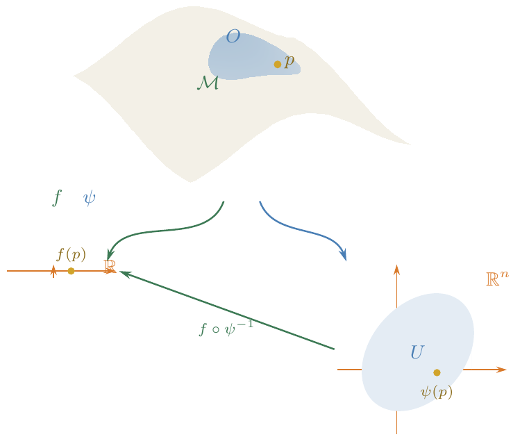
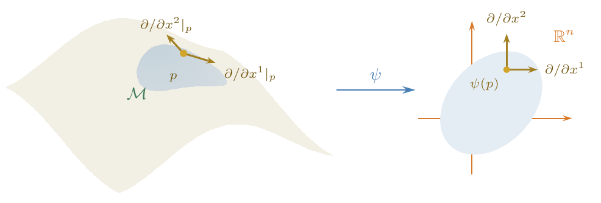
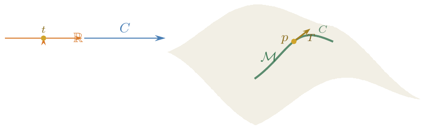

In the previous lecture we saw that a general manifold \(\mathcal{M}\) does not carry a natural vector space structure. Nevertheless, we showed that one can visualise a tangent plane at each point when the manifold is embedded in some ambient \(\mathbb{R}^{m}\), and we identified a strategy: replace tangent vectors by directional derivatives, which can be defined intrinsically. The goal of this lecture is to carry out that programme—giving a purely intrinsic definition of the tangent space that makes no reference to any embedding.
The key idea is to identify tangent vectors with directional derivatives.
Let \(\boldsymbol{v} = (v^1,\dots,v^n)\in\mathbb{R}^{n}\). At a point \(p\in\mathbb{R}^{n}\), define the directional derivative along \(\boldsymbol{v}\) as follows. Suppose \(f\) is a \(C^1\) function from \(\mathbb{R}^{n}\to\mathbb{R}\), and define \[\label{eq:dir-deriv-Rn} \boldsymbol{v}\cdot\nabla = \sum_{\mu=1}^{n} v^\mu \frac{\partial }{\partial {x^\mu}}\,, \qquad v(f) \;\equiv\; (\boldsymbol{v}\cdot\nabla) f(\boldsymbol{x})\Big|_{\boldsymbol{x}=p} = \sum_{\mu=1}^{n} v^\mu \frac{\partial f}{\partial x^\mu}(p)\,.\] This is the directional derivative of \(f\) at \(p\) along \(\boldsymbol{v}\).
Conversely, given the directional derivative operator \((\boldsymbol{v}\cdot\nabla)_p\), we can recover the vector \(\boldsymbol{v}\in\mathbb{R}^{n}\) (apply it to each coordinate function). Furthermore, directional derivatives at \(p\) form a vector space:
In ℝn, there is a one-to-one correspondence between vectors and directional derivative operators. On a general manifold, where there is no ambient space, we define tangent vectors to be directional derivative operators.
Write ℱ(ℳ) for the set of all C∞ functions f : ℳ → ℝ.
Note that \((\boldsymbol{v}\cdot\nabla)_p\) satisfies two properties:
Linearity: \(v(af + bg) = a\,v(f) + b\,v(g)\) for all \(f,g\in\mathscr{F}(\mathcal{M})\) and all \(a,b\in\mathbb{R}\).
Leibniz rule: \(v(fg) = f(p)\,v(g) + g(p)\,v(f)\) (the product rule).
Let ℳ be a smooth manifold and p ∈ ℳ. The tangent space Vp at p is the set of all maps v : ℱ(ℳ) → ℝ satisfying (1) and (2) above.
Using only properties (1) and (2), show that if h ∈ ℱ(ℳ) is constant then v(h) = 0 for every v ∈ Vp.
Prove that Vp is a vector space (under pointwise addition and scalar multiplication of the maps v).
If v ∈ Vp and f, g ∈ ℱ(ℳ) agree on some neighbourhood of p, then v(f) = v(g).
Proof. Let \(h = f-g\); by assumption \(h\) vanishes on some neighbourhood \(U\) of \(p\). By paracompactness (axiom (0) of Def. [def:manifold]) there exists a bump function \(\phi\in\mathscr{F}(\mathcal{M})\) with \(\phi(p) = 0\) and \(\phi\equiv 1\) on \(\mathcal{M}\setminus U\). Then \(h = \phi h\) pointwise, so by the Leibniz rule \(v(h) = \phi(p)\,v(h) + h(p)\,v(\phi) = 0\). ◻
In particular, a tangent vector depends only on the germ of its argument at \(p\), so we may freely apply \(v\) to a function defined only on a neighbourhood of \(p\) by smoothly extending it to all of \(\mathcal{M}\) (any two such extensions give the same value).
Have we created a monster? By demanding only linearity and the Leibniz rule, we might inadvertently have produced a huge—even infinite-dimensional—vector space that has nothing to do with tangent vectors. Fortunately, this is not the case:
Let ℳ be an n-dimensional smooth manifold and let p ∈ ℳ. Then dim (Vp) = n.
Let \(\psi: O\to U\subset\mathbb{R}^{n}\) be a chart with \(p\in O\). If \(f\in\mathscr{F}(\mathcal{M})\), then the composite \(f\circ\psi^{-1}: U\to\mathbb{R}\) is \(C^\infty\).

−1 : U → ℝ is an ordinary Euclidean-space function, whose partial derivatives at ψ(p) define the coordinate-basis tangent vectors." style="max-width:100%; height:auto;">For μ = 1, …, n, define $$\label{eq:coord-basis} X_\mu(f) = \frac{\partial (f\circ\psi^{-1})}{\partial x^\mu}\bigg|_{\psi(p)}\,,$$ where (x1,…,xn) are the coordinates of ℝn.
Claim. The \(X_\mu\) so defined are tangent vectors (i.e. elements of \(V_p\)).
Verification. Linearity of \(X_\mu\) is inherited from that of \(\partial/\partial x^\mu\). For the Leibniz rule, use \((fg)\circ\psi^{-1} = (f\circ\psi^{-1})\,(g\circ\psi^{-1})\) together with the ordinary product rule in \(\mathbb{R}^{n}\): \[X_\mu(fg) = \frac{\partial \bigl((f\circ\psi^{-1})(g\circ\psi^{-1})\bigr)}{\partial x^\mu}\bigg|_{\psi(p)} = f(p)\,X_\mu(g) + g(p)\,X_\mu(f)\,.\]
Proof that \(\{X_\mu\}\) is a basis for \(V_p\). We use the following lemma.
Lemma. Let \(V\subset\mathbb{R}^{n}\) be a convex open neighbourhood of \(\boldsymbol{a} = (a^1,\dots,a^n)\), and let \(F: V\to\mathbb{R}\) be \(C^\infty\). Then there exist \(C^\infty\) functions \(H_\mu: V\to\mathbb{R}\) such that \[\label{eq:taylor-lemma} F(\boldsymbol{x}) = F(\boldsymbol{a}) + \sum_{\mu=1}^{n}(x^\mu - a^\mu)\,H_\mu(\boldsymbol{x})\,,\] with \(H_\mu(\boldsymbol{a}) = \dfrac{\partial F}{\partial x^\mu}\Big|_{\boldsymbol{x}=\boldsymbol{a}}\). (Convexity ensures \(H_\mu(\boldsymbol{x}) = \int_0^1 (\partial F/\partial x^\mu)(\boldsymbol{a}+t(\boldsymbol{x}-\boldsymbol{a}))\,dt\) is well-defined; see the homework.)
Let \(F = f\circ\psi^{-1}\) and \(\boldsymbol{a} = \psi(p)\), and fix a convex open neighbourhood \(V\subset U_\alpha\) of \(\boldsymbol{a}\) (e.g. an open ball). Then by [eq:taylor-lemma], for all \(q\in\psi^{-1}(V)\subset O\), \[\label{eq:taylor-on-M} f(q) = f(p) + \sum_{\mu=1}^{n} \bigl((x^\mu\circ\psi)(q) - (x^\mu\circ\psi)(p)\bigr)\, H_\mu(\psi(q))\,.\]
The functions \(x^\mu\circ\psi\) and \(H_\mu\circ\psi\) on \(\psi^{-1}(V)\) are extended smoothly to all of \(\mathcal{M}\) via a bump function; by Lemma [lem:locality], \(v\) gives the same value on any such extension. Now suppose \(v\in V_p\). Apply \(v\) to \(f\): \[\begin{aligned} v(f) &\stackrel{\eqref{eq:taylor-on-M}}{=} v\!\Bigl(f(p) + \textstyle\sum_{\mu} (\cdots)\,H_\mu(\psi(\cdot))\Bigr) \notag\\ &= \underbrace{v(f(p))}_{=\,0} + \sum_{\mu=1}^{n} \Bigl[ \underbrace{(H_\mu\circ\psi)(p)}_{\partial F/\partial x^\mu|_{\psi(p)}} \cdot v(x^\mu\circ\psi) + \underbrace{\bigl((x^\mu\circ\psi)(p) - (x^\mu\circ\psi)(p)\bigr)}_{=\,0} \cdot v(H_\mu\circ\psi) \Bigr] \notag\\ &= \sum_{\mu=1}^{n} \underbrace{v(x^\mu\circ\psi)}_{=:\,v^\mu} \;\frac{\partial (f\circ\psi^{-1})}{\partial x^\mu}\bigg|_{\psi(p)}\,. \label{eq:v-expansion} \end{aligned}\] Therefore \[\label{eq:v-in-basis} \boxed{v(f) = \sum_{\mu=1}^{n} v^\mu\, X_\mu(f)}\,,\] and the \(\{X_\mu \mid \mu = 1,\dots,n\}\) form a basis for \(V_p\). ◻
The basis \(\{X_\mu\}\) is called the coordinate basis. It is often denoted \[\label{eq:coord-basis-notation} X_\mu \;\equiv\; \frac{\partial }{\partial x^\mu}\bigg|_p\,, \qquad\text{or}\qquad \partial_\mu\big|_p\,, \qquad\text{or}\qquad e_\mu\,.\]

−1; they are genuine tangent vectors to the surface at p." style="max-width:100%; height:auto;">Suppose we choose a different chart \(\psi'\), giving a coordinate basis \(\{X'_\nu\}\). By the chain rule: \[\label{eq:change-basis} X_\mu = \sum_{\nu=1}^{n} \frac{\partial x'^\nu}{\partial x^\mu}\bigg|_{\psi(p)}\, X'_\nu\,.\]
Given a tangent vector \(v = \sum_\mu v^\mu X_\mu\), the components in the new basis are \[\label{eq:vector-transform} \boxed{v'^\nu = \sum_{\mu=1}^{n} v^\mu\, \frac{\partial x'^\nu}{\partial x^\mu}\bigg|_{\psi(p)}}\] This is the (contravariant) vector transformation law.
To do mechanics on a manifold we need the notion of a trajectory—a smooth path that a test particle might follow.
A smooth curve C on a manifold ℳ is a C∞ map C : ℝ → ℳ (or from an interval I⊂ℝ) , t ↦ C(t) .

To each point \(p\in\mathcal{M}\) on the curve \(C\) (say \(p = C(t_0)\)), we associate a tangent vector \(T\in V_p\) as follows. For \(f\in\mathscr{F}(\mathcal{M})\): \[\label{eq:tangent-from-curve} T(f) = \frac{d }{d t}(f\circ C)\bigg|_{p} = \sum_{\mu} \frac{\partial (f\circ\psi^{-1})}{\partial x^\mu}\bigg|_{\psi(p)} \,\frac{d x^\mu}{d t} = \sum_{\mu} \frac{d x^\mu}{d t}\, X_\mu(f)\,,\] where \(x^\mu(t) \equiv (x^\mu\circ\psi\circ C)(t)\) denotes the \(\mu\)-th component of \(\psi(C(t))\in\mathbb{R}^{n}\).
This expansion works for any coordinate basis. The components of \(T\) in the basis \(\{X_\mu\}\) are \[\label{eq:tangent-components} T^\mu = \frac{d x^\mu}{d t}\,.\]
We call \(V_p\) the tangent space at \(p\). The tangent bundle is the disjoint union of all tangent spaces: \[\label{eq:tangent-bundle} T\mathcal{M} = \bigcup_{p\in\mathcal{M}} V_p\,.\]
Although dim (Vp) = dim (Vq) = n for all p, q ∈ ℳ, and thus Vp ≅ Vq as vector spaces, the isomorphisms are not natural. There is no canonical way to identify a tangent vector at p with one at q; the identification can even vary wildly as one moves around ℳ. To obtain a “good” (smooth, geometrically meaningful) identification one needs extra data—a connection, which we introduce in Lecture [sec:derivative-operators].
A tangent vector field v on a manifold ℳ is a smooth assignment of a tangent vector v|p ∈ Vp to each point p ∈ ℳ. We say v is smooth if for every f ∈ ℱ(ℳ), the function v(f) : ℳ → ℝ defined by p ↦ v|p(f) is C∞.
Note that smoothness of a vector field is defined purely in terms of the manifold structure—no metric is required. This is perhaps surprising: we cannot yet compare tangent vectors at different points, yet we can still say whether a vector field varies smoothly.
The coordinate basis fields Xμ are smooth: Xμ(f)(p) = ∂(f∘ψ−1)/∂xμ|ψ(p) is a C∞ function of p.
Since an arbitrary tangent vector \(v\) is a linear combination of the \(X_\mu\) with components \(v^\mu\), smoothness of \(v\) is equivalent to smoothness of its component functions \(v^\mu\in\mathscr{F}(\mathcal{M})\).
A velocity field v is a tangent vector field. If C is a smooth curve solving the equation of motion, then T(f) = v(f) along C—i.e. the tangent to the solution curve equals the velocity field.